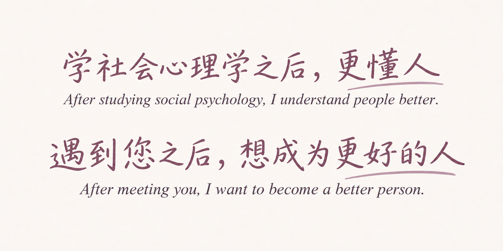
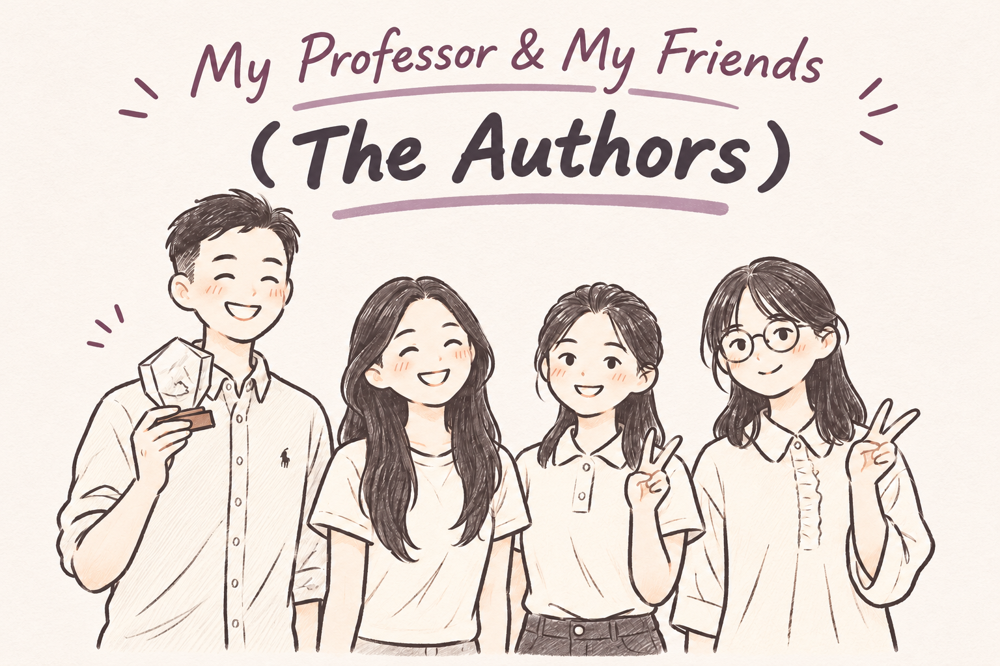

The Purse and Cradle
From an undergraduate thesis to acceptance: a year of learning, five rounds of revision, and the encouragement that made it possible.

From an undergraduate thesis to acceptance: a year of learning, five rounds of revision, and the encouragement that made it possible.

How my first undergraduate publication helped me discover what I enjoy about research—and how much I still have to learn.